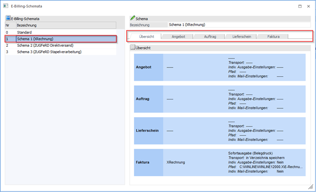
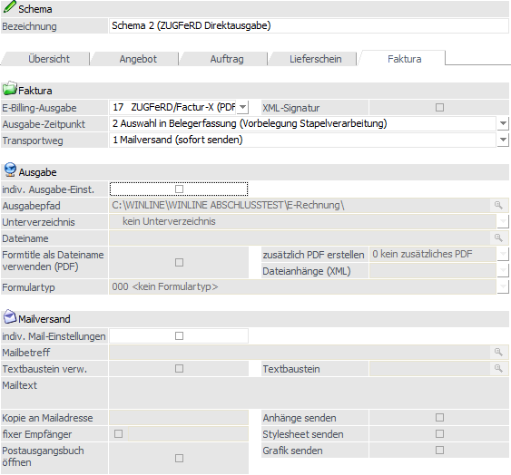
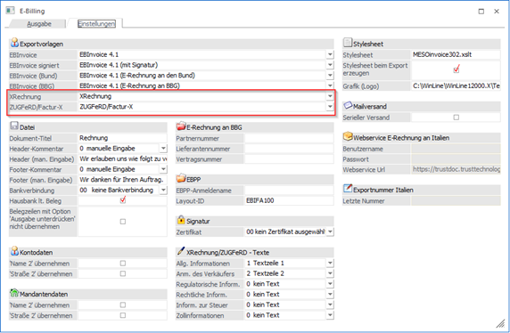
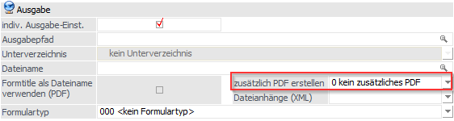
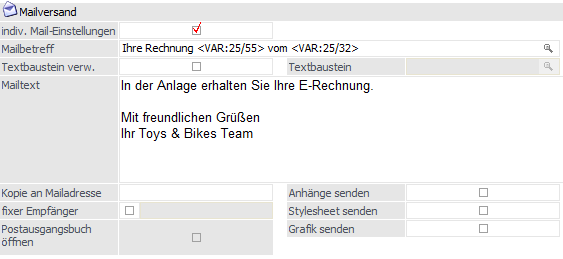

Wird im linken Bereich ein angelegtes Schema selektiert (oder ein neues angelegt) erhält der Benutzer im rechten Bereich ein Eingabefeld für die Bezeichnung des Schemas und insgesamt fünf Unterregister.

Im Register "Übersicht" werden dem Benutzer die wichtigsten Einstellungen, unterteilt in die vier weiteren Register Angebot bis Faktura, dargestellt. Dadurch kann der Benutzer auf einen Blick erkennen, in welchem Register bzw. für welche Belegstufe Einstellungen in diesem Schema hinterlegt wurden.
Ein Schema wird Belegstufenübergreifend verwendet und somit können indiv. Einstellungen für jede Belegstufe einzeln definiert werden.
Wird die Übersicht in grün dargestellt, wurde im Schema eine Änderung vorgenommen und ist zum Speichern vorgemerkt. Wird die Übersicht in rot dargestellt, wurde das Schema als "zu löschen" markiert.
Pro Belegstufe können folgende Einstellungen für den Export definiert werden:

Ø E-Billing-Ausgabe
An dieser Stelle wird der Exporttyp (1 bis 17), also das Format welches am Ende erzeugt werden soll ODER eine konkrete Exportvorlage (ab 101) hinterlegt.
Werden z. B. die Exporttypen "15 XRechnung", "16 ZUGFeRD/Factur-X" oder "17 ZUGFeRD/Factur-X (PDF inkl. XML)" gewählt, werden die XML-Dateien dieser Formate mit der Exportvorlage erzeugt, die im E-Billing-Export (FAKT/Erfassen/E-Billing/Export) im Register "Einstellungen" hinterlegt wurden.

Ø Ausgabe-Zeitpunkt
An dieser kann definiert werden, zu welchem Zeitpunkt im E-Billing-Prozess die Belege erzeugt werden sollen. Folgende Auswahlmöglichkeiten stehen zur Verfügung:
ü 0 - Stapelverarbeitung (E-Billing-Export)
Diese Einstellung entspricht dem bisherigen E-Billing-Prozess. Belege werden beim Belegdruck an den E-Billing-Export übergeben und können dort erzeugt werden
ü 1 - Sofortausgabe (Belegdruck)
Diese Option erzeugt direkt beim Belegdruck den E-Billing-Beleg. Dabei wird das E-Billing-Export-fenster im Hintergrund versteckt geöffnet und der Beleg lt. Schema erzeugt, abgelegt und versendet.
ü 2 - Auswahl in Belegerfassung (Vorbelegung Stapelverarbeitung)
Entspricht der Option 0, der Benutzer kann aber indiv. pro Beleg per Doppelklick auf das entsprechende E-Billing-Icon in der Belegerfassung zwischen den Optionen 0 und 1 wechseln.
ü 3 - Auswahl in Belegerfassung (Vorbelegung Sofortausgabe)
Entspricht der Option 1, der Benutzer kann aber indiv. pro Beleg per Doppelklick auf das entsprechende E-Billing-Icon in der Belegerfassung zwischen den Optionen 1 und 0 wechseln.
An dieser Stelle kann der Transportweg, also was mit den E-Billing-Belegen nach der Erzeugung geschehen soll, eingestellt werden. Folgende Auswahlmöglichkeiten stehen zur Verfügung:
ü 0 - in Verzeichnis speichern
Die Belege/Dateien werden lediglich im jeweiligen Verzeichnispfad abgelegt.
ü 1 - Mailversand (sofort senden)
Die Belege/Dateien werden über das Postausgangsbuch (PAB) versendet. Die Mails werden im PAB als auch im entsprechenden Verzeichnis im Ordner "Gesendet" abgestellt.
ü 2 - Mail im Postausgangsbuch speichern
Die Belege/Dateien werden im Postausgangsbuch im Ordner "Entwürfe" abgelegt und können von dort aus versendet werden.
ü 4 - Webservice E-Rechnung Italien
Für die deutsche E-Rechnung nicht relevant.
Hinweis
Option 3 ist nicht in der Auswahl enthalten, da diese für einen zukünftigen Versand via Peppol reserviert wird.
Ausgabe

Ø Indiv. Ausgabe-Einst.
Wird diese Option aktiviert, können individuelle Ausgabeeinstellungen, die nur für dieses Schema gelten, definiert werden. D.h. die Einstellungen aus dem Standard-Schema werden übersteuert.
Hinweis
In den Eingabefeldern "Ausgabepfad" und "Dateiname" können die Werte mit F3-Taste aus dem Standard-Schema übernommen werden.
Ø Zusätzlich PDF erstellen
Folgende Optionen stehen hier zur Auswahl:
ü 0 - keine zusätzliches PDF
Es wird kein PDF erzeugt und lediglich die XML-Datei erzeugt
ü 1 - Standard-PDF
Für reine XML-Ausgabeformate wie z. B. "XRechnung" kann eine Rechnungskopie im PDF-Format erstellt werden. Hierbei handelt es sich um eine zusätzliche Datei, die ein Wasserzeichen "Kopie" enthält. Diese Rechnungskopie wird ebenfalls im Exportverzeichnis abgelegt und/oder beim Mailversand mit in den Anhang gestellt.
ü 2 - ZUGFeRD-PDF
Diese Option ist für ZUGFeRD/Factur-X-Exportvorlagen vorgesehen, die beim Eingabefeld "E-Billing-Ausgabe" hinterlegt werden. Dadurch ist es möglich, dass aus einer kundenindividuell angepassten Exportvorlage "ZUGFeRD/Factur-X" eine ZUGFeRD-Datei im hybriden Format erzeugt wird.
Die Alternative wäre, dass Exporttyp 17 "ZUGFeRD/Factur-X (PDF inkl. XML) gewählt wird und dann entsprechend für jeden Ausgabevorgang die Exportvorlage im E-Billing-Export geändert wird.
Mailversand

Ø Indiv. Mail-Einstellungen
Wird diese Option aktiviert, können individuelle Mailversand-Einstellungen, die nur für dieses Schema gelten, definiert werden. D.h. die Einstellungen aus dem Standard-Schema werden übersteuert.
Hinweis
In den Eingabefeldern "Mailbetreff" und "Mailtext" können die Werte mit der F3-Taste aus dem Standard-Schema übernommen werden.